Once you have VirtualBox installed, there are two files that you need:
The operating system for our virtual machine is stored on the virtual machine disk, and the settings for our virtual machine (i.e. the virtual hardware) are stored in the machine settings file.
The latest version of both files can be found below:
| Version | Released | Virtual machine settings | Virtual machine disk |
|---|---|---|---|
| lbscoding_v03 (current version) | 22/04/2013 | lbscoding_v03.vbox | box-disk03.vmdk |
| lbscoding_v01 | 16/04/2013 | lbscoding_v01.vbox | box-disk1.vmdk |
Follow these steps to ensure you have VirtualBox setup correctly
1. Download the latest version of the two required files (see above)
2. Launch Finder (bottom left icon) – on Windows open an Explorer window:
Finder Window will then appear
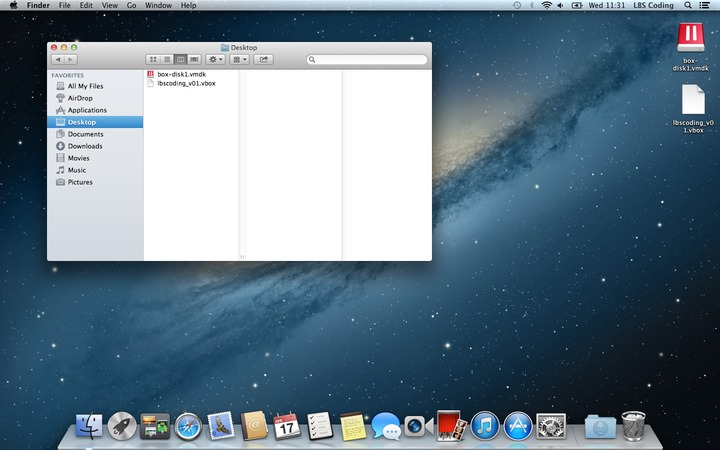3. Go to the Home folder – on Windows this can be your “My Documents” folder:
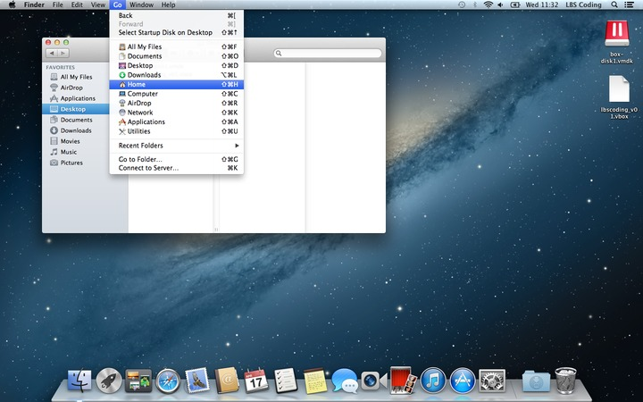4. Create a New Folder called...
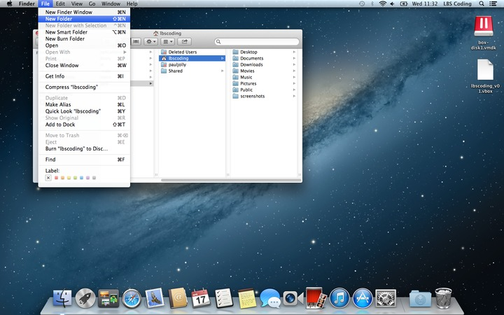... [VirtualBox VMs] – don’t use brackets, case is significant:
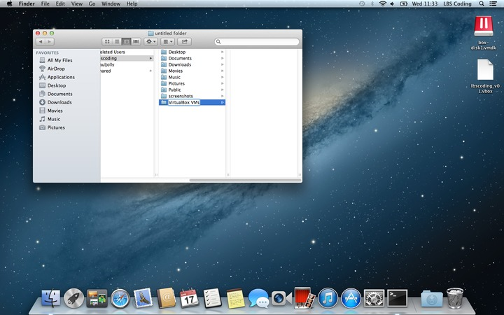5. Within [VirtualBox VMs] create another folder called...
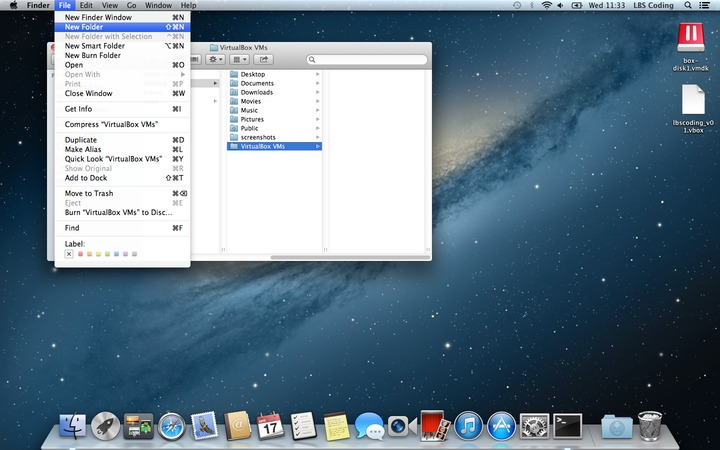... [lbscoding_v03] (use the name corresponding to the latest version - these images just show [lbscoding] to remain current):
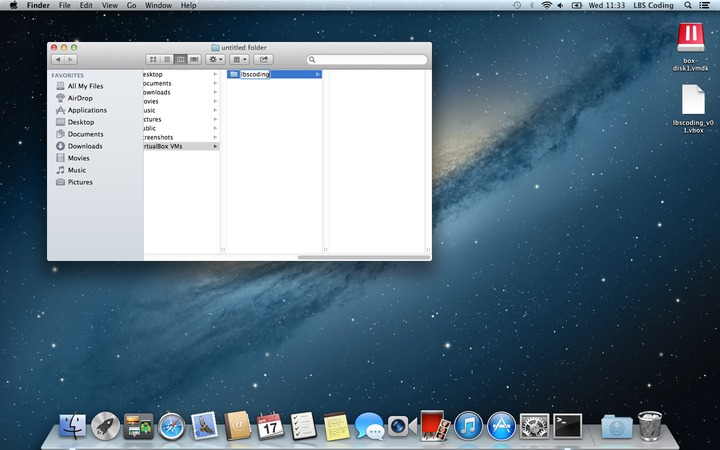6. Drag the VirtualBox files you downloaded into [lbscoding]
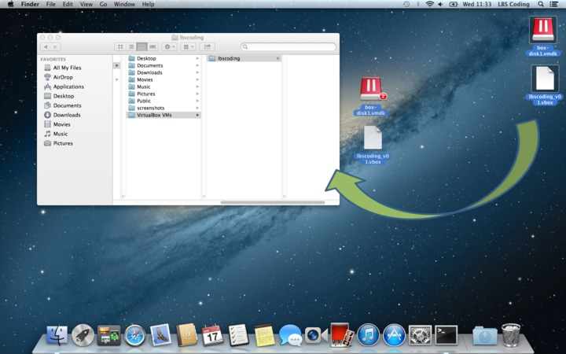Files are now in the right place:
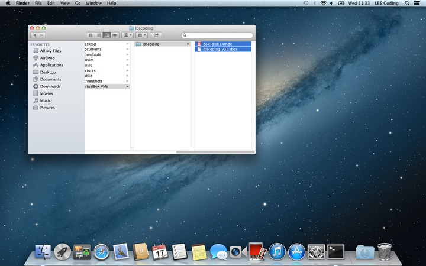7. Launch VirtualBox:
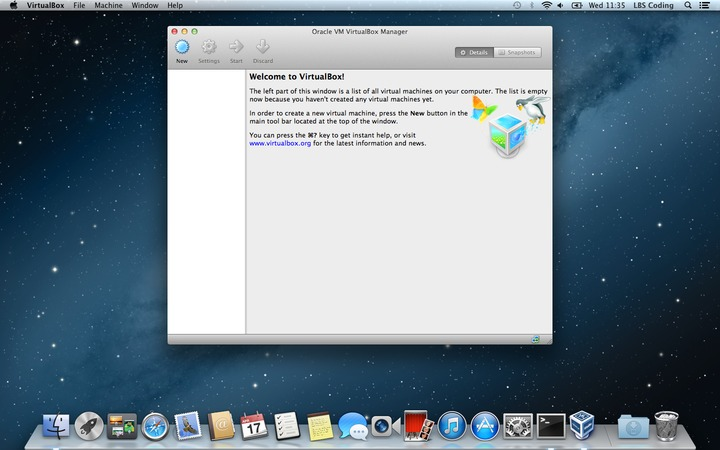8. Add a new machine:
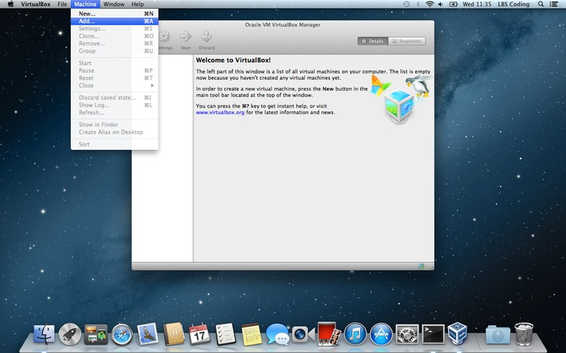9. Find the lbscoding.vbox file we just moved into [VirtualBox VMs]/[lbscoding]. Click Open:
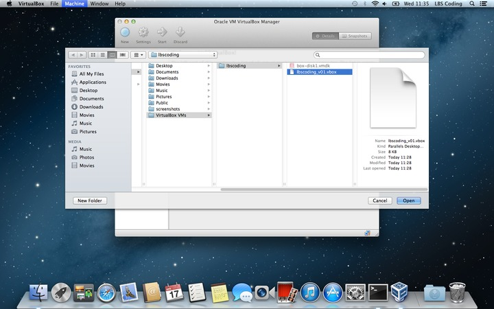10. The virtual machine will be added. Click Start to start the virtual machine:
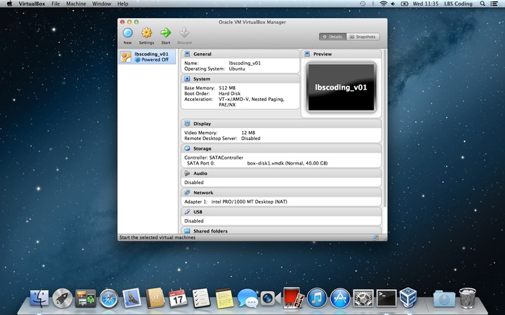11. You can ignore these warnings that appear. If you want you can select "Do not show this message again"
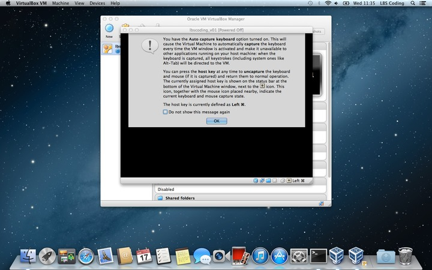 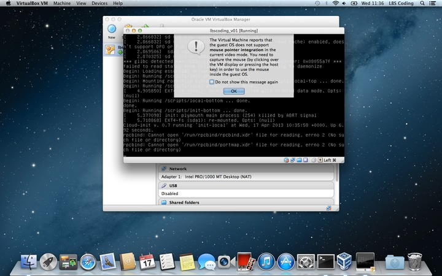 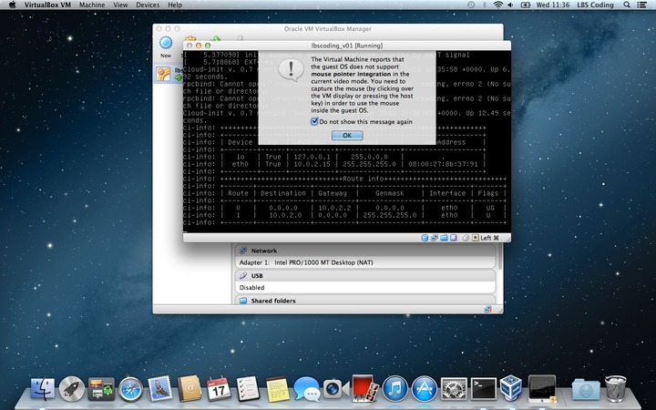 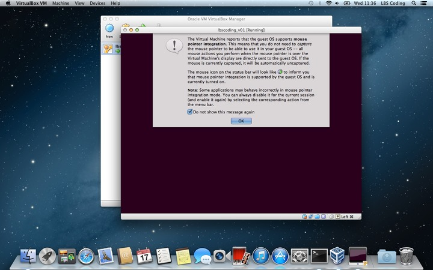12. If you get here, good work. Log in with username: lbs, password: lbscoding:
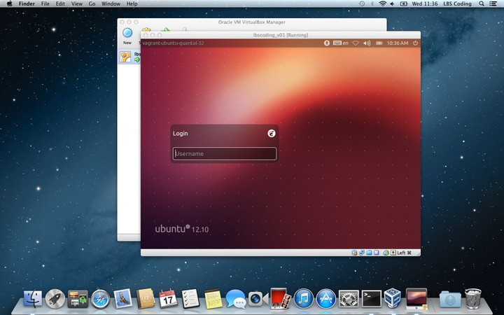13. You should then see something like this:
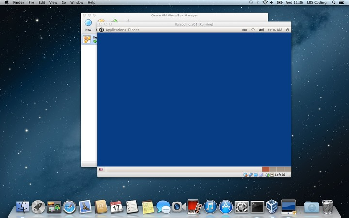14. To turn off your virtual machine, click the Power icon in the top right hand corner of the virtual machine and select "Shut down"
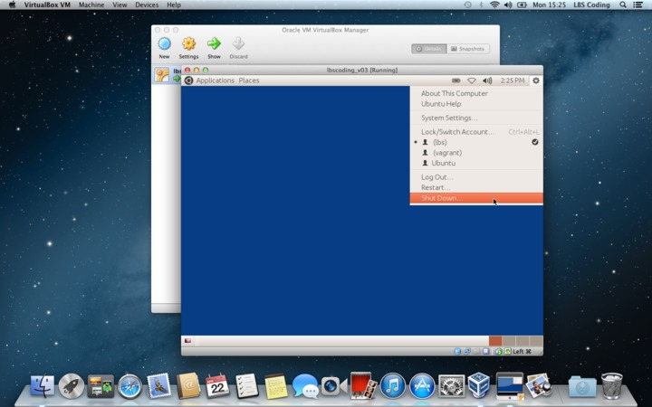